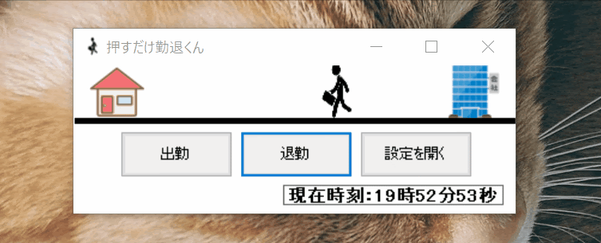

簡易的なアプリケーションばかりですが、わずかでも評価いただけると幸いです。
ストップウォッチを用いたゲーム。誤差0.00秒を目指してみましょう。
3秒後にタイマーが隠れます！
2022.3
web業界未経験時にJavaScriptの練習の一環として作成しました。
簡単なゲームアプリですが、面白いと好評だったので記載しておきます。
1社目の職場はExcelにて勤怠管理を行っていました。
効率化できないかと本アプリを開発し、Excelを開くことなくボタン一つで勤怠管理を可能にしました。
Visual Basic15, Excel
2020.5~6
従来「Excelを開く→勤怠入力→保存、閉じる」といった工程に約10秒程かかっていましたが、本アプリ開発後、約2秒で勤怠作業が完了できるようになりました。
詰めの甘い箇所はありますが、他の社員にも愛用いただいているアプリケーションです。